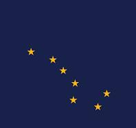
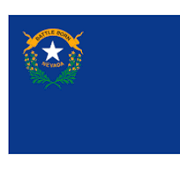
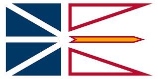

ğŸŒWelcome to North America
🌠North America is the third-largest continent and includes 23 countries, with the 🇺🇸 United States, 🇨🇦 Canada, and 🇲🇽 Mexico being the largest.
The continent features a wide range of geographical landscapes, from the ❄️ Arctic tundra in the north to 🌴 tropical rainforests in Central America.
North America is a major global player in 🌠economics, 💻 technology, and 🏠 culture, with the 🇺🇸 U.S. being the largest economy in the world.
It is home to significant natural wonders, such as the ğŸï¸ Grand Canyon, 🌋 Yellowstone National Park, and the 🌊 Great Lakes.
The continent has a diverse cultural heritage, influenced by 🧑â€ğŸ¦° Indigenous peoples, 🇪🇺 European colonization, and 🌠immigration from all over the world.
North America has been at the forefront of 🔬 scientific and 🔧 technological advancements, with major contributions to 🚀 space exploration, 🥠medicine, and ğŸ–¥ï¸ computing.
The continent is known for its vibrant cities, such as 🌆 New York, 🌴 Los Angeles, and 🗼 Toronto, which are centers of 💰 finance, 🬠entertainment, and 💡 innovation.
ğŸŒDay 1: Introduction to North America

North America is a big and exciting place. It is the third-largest continent on Earth, covering about 24.7 million square kilometers. North America has many different landscapes, like mountains, forests, deserts, and beaches.
The Rocky Mountains are very tall and snowy, and the Grand Canyon is a giant, beautiful hole in the ground.
People and Languages
North America is home to over 579 million people who speak many different languages. English, Spanish, and French are the most common languages.
Heroes of North America
Many important people come from North America. George Washington helped make the United States a country. Martin Luther King Jr. worked hard for equality and fairness for everyone.
Biggest and Smallest Features
The biggest country in North America is Canada, and the smallest is Saint Kitts and Nevis. The tallest mountain is Denali in Alaska, and the longest river is the Mississippi River.
Countries
United States


Canada

Mexico


Did You Know?
The Grand Canyon in the United States is one of the Seven Natural Wonders of the World.
Canada has the longest coastline of any country in the world, stretching over 202,080 kilometers.
Mexico is home to 34 UNESCO World Heritage Sites, including ancient ruins and natural reserves.
ğŸŒDay 2: Exploring the United States
Introduction to the United States
The United States is a big country in North America with 50 states. It has many different places to see, like cities, forests, mountains, and beaches.
Big Cities
Some of the biggest cities are New York City, Los Angeles, and Chicago. Each city has lots of interesting things to see and do.
Famous Places
The United States has many famous landmarks, like the Statue of Liberty, the Grand Canyon, and the White House.
Culture
People in the United States come from many different backgrounds, so there are lots of different foods, music, and traditions. English is the main language, but many people speak Spanish and other languages too.
Heroes
Heroes from the United States include Abraham Lincoln, who helped end slavery, and Amelia Earhart, a famous pilot.
States, Their Flags, and Capital Cities in the United States
| State | Flag | Capital City |
|---|---|---|
| Alabama | Montgomery | |
| Alaska |  | Juneau |
| Arizona | Phoenix | |
| Arkansas |  |
Little Rock |
| California |  |
Sacramento |
| Colorado |  |
Denver |
| Connecticut |  |
Hartford |
| Delaware |  |
Dover |
| Florida | Tallahassee | |
| Georgia |  |
Atlanta |
| Hawaii |  |
Honolulu |
| Idaho |  |
Boise |
| Illinois | Springfield | |
| Indiana | Indianapolis | |
| Iowa | Des Moines | |
| Kansas |  |
Topeka |
| Kentucky | Frankfort | |
| Louisiana | Baton Rouge | |
| Maine |  |
Augusta |
| Maryland | Annapolis | |
| Massachusetts | Boston | |
| Michigan | Lansing | |
| Minnesota | Saint Paul | |
| Mississippi |  |
Jackson |
| Missouri |  |
Jefferson City |
| Montana | Helena | |
| Nebraska |  |
Lincoln |
| Nevada |  | Carson City |
| New Hampshire | Concord | |
| New Jersey |  |
Trenton |
| New Mexico | Santa Fe | |
| New York |  |
Albany |
| North Carolina |  |
Raleigh |
| North Dakota |  |
Bismarck |
| Ohio |  |
Columbus |
| Oklahoma |  |
Oklahoma City |
| Oregon |  |
Salem |
| Pennsylvania |  |
Harrisburg |
| Rhode Island | Providence | |
| South Carolina |  |
Columbia |
| South Dakota | Pierre | |
| Tennessee |  |
Nashville |
| Texas | Austin | |
| Utah |  |
Salt Lake City |
| Vermont | Montpelier | |
| Virginia |  |
Richmond |
| Washington |  |
Olympia |
| West Virginia |  |
Charleston |
| Wisconsin |  |
Madison |
| Wyoming |  |
Cheyenne |
ğŸŒImportant States
California

Yosemite National Park in California is famous for its giant sequoias and beautiful waterfalls.
California is the most populous state and is known for its entertainment industry in Hollywood, its technology hub in Silicon Valley, and natural wonders like Yosemite National Park.
New York

The Statue of Liberty in New York City is a symbol of freedom and democracy.
New York is home to the largest city in the U.S., New York City, which is known as the "Big Apple." It's famous for landmarks like the Statue of Liberty, Times Square, and Central Park.
Texas

The Alamo in Texas is a historic site from the Texas Revolution.
Texas is the second-largest state by both area and population. It's known for its oil industry, cowboy culture, and the Alamo in San Antonio.
Florida
The Everglades in Florida are a unique wetland ecosystem home to many rare species.
Florida is known for its warm weather, beautiful beaches, and popular tourist attractions like Walt Disney World.
Illinois

Chicago, Illinois, is famous for its impressive skyline and deep-dish pizza.
Illinois is home to Chicago, one of the largest cities in the U.S., known for its architecture, museums, and vibrant culture.
Hawaii

Hawaii's active volcanoes are one of the state's most remarkable natural features.
Hawaii is the only U.S. state made up entirely of islands and is famous for its tropical climate, beaches, and volcanic landscapes.
Alaska

Alaska's glaciers are stunning and are a major attraction for visitors.
Alaska is the largest state in the U.S. by area, known for its rugged wilderness, glaciers, and rich wildlife.
Massachusetts

Boston in Massachusetts is one of the oldest cities in the United States.
Massachusetts is rich in American history, with Boston being a key city in the American Revolution and home to many historical landmarks.
Arizona
The Grand Canyon in Arizona is one of the most famous natural wonders in the world.
Arizona is known for its desert landscapes, the Grand Canyon, and its Native American heritage.
Pennsylvania

The Liberty Bell in Pennsylvania is a symbol of American independence.
Pennsylvania played a crucial role in American history, being the site of the signing of the Declaration of Independence and the location of the Liberty Bell in Philadelphia.
States, Their Flags, and Capital Cities in the United States
| State | Flag | Capital City |
|---|---|---|
| Alabama | Montgomery |
ğŸŒDid You Know?
- 💁🏼‍♂️Alaska is the largest state in the United States, but it has one of the smallest populations.
- 💁🏼‍♂️Hawaii is the only state made up entirely of islands.
- 💁🏼‍♂️Rhode Island is the smallest state by area, but it's rich in history, being one of the original 13 colonies.
- 💁🏼‍♂️Mount Whitney in California is the highest point in the contiguous United States.
- 💁🏼‍♂️Texas was once an independent country known as the Republic of Texas before joining the United States in 1845.
- 💁🏼‍♂️Florida is home to the oldest city in the U.S., St. Augustine, founded by the Spanish in 1565.
- 💁🏼‍♂️Illinois is known as the "Land of Lincoln" because Abraham Lincoln lived there before becoming president.
- 💁🏼‍♂️Arizona's Grand Canyon is over 1 mile deep and reveals nearly 2 billion years of Earth's history.
- 💁🏼‍♂️Pennsylvania is home to Hershey, the town famous for its chocolate factory and theme park.
- 💁🏼‍♂️Massachusetts is where the famous "Boston Tea Party" took place, an important event leading up to the American Revolution.
ğŸŒDay 3: Exploring Canada

Canada is a vast country with diverse landscapes and cultures. It offers beautiful natural scenery, rich history, and welcoming people.
ğŸŒIntroduction to Canada
Canada is known for its stunning landscapes, from mountains and forests to lakes and rivers. The capital city is Ottawa, located in the province of Ontario.
Big Cities
Canada’s major cities include Toronto, Vancouver, Montreal, and Calgary. Each city is known for its unique culture, attractions, and landmarks.
Provinces and Territories of Canada
Canada is made up of ten provinces and three territories, each with its own unique geography and cultural heritage.
States, Their Flags, and Capital Cities in Canada
| Province/Territory | Flag | Capital City |
|---|---|---|
| Ontario |  |
Toronto |
| Quebec | Quebec City | |
| Nova Scotia |  |
Halifax |
| New Brunswick |  |
Fredericton |
| Manitoba | Winnipeg | |
| British Columbia |  |
Victoria |
| Prince Edward Island |  |
Charlottetown |
| Saskatchewan |  |
Regina |
| Alberta |  |
Edmonton |
| Newfoundland and Labrador |  | St. John's |
| Northwest Territories |  |
Yellowknife |
| Yukon |  |
Whitehorse |
| Nunavut | Iqaluit |
Ontario

Ontario is home to the nation’s capital, Ottawa, and the largest city, Toronto. It's known for its beautiful natural landscapes and the iconic Niagara Falls.

Toronto, the capital of Ontario, is a bustling metropolis known for its towering skyscrapers and cultural diversity.
Quebec

Quebec is known for its rich history and French-speaking culture. It offers scenic landscapes and historic sites like Old Quebec.

Quebec City, the capital of Quebec, is known for its historic architecture and charming old town.
Nova Scotia

Nova Scotia is a maritime province known for its stunning coastlines, lighthouses, and the historic city of Halifax.

Halifax, the capital of Nova Scotia, is a vibrant city with a rich maritime history and beautiful waterfront.
New Brunswick

New Brunswick is known for its natural beauty, including the Bay of Fundy and its unique reversing falls.
Fredericton, the capital of New Brunswick, is a charming city with a strong cultural scene and beautiful parks.
Manitoba

Manitoba is known for its vast prairies and beautiful lakes, including Lake Winnipeg and Riding Mountain National Park.

Winnipeg, the capital of Manitoba, is known for its cultural attractions, including the Canadian Museum for Human Rights.
British Columbia
British Columbia is renowned for its stunning natural beauty, including the Rocky Mountains, Pacific coastline, and vibrant cities.

Victoria, the capital of British Columbia, is known for its historic charm and beautiful gardens.
Prince Edward Island

Prince Edward Island is known for its picturesque landscapes, red sand beaches, and the famous Anne of Green Gables house.
Charlottetown, the capital of Prince Edward Island, is known as the birthplace of Confederation and offers a charming small-town atmosphere.
Saskatchewan
Saskatchewan is known for its open prairies, stunning sunsets, and the beautiful Prince Albert National Park.

Regina, the capital of Saskatchewan, is known for its green spaces and the beautiful Wascana Centre.
Alberta

Alberta is known for its breathtaking landscapes, including the Rocky Mountains and Banff National Park.

Edmonton, the capital of Alberta, is known for its festivals, cultural attractions, and the vast West Edmonton Mall.
Newfoundland and Labrador
Newfoundland and Labrador are known for their rugged coastlines, icebergs, and vibrant fishing communities.

St. John's, the capital of Newfoundland and Labrador, is known for its colorful houses and rich maritime history.
Northwest Territories
The Northwest Territories are known for their vast wilderness, northern lights, and the beautiful Nahanni National Park Reserve.

Yellowknife, the capital of the Northwest Territories, is known for its gold mining history and vibrant arts scene.
Yukon

The Yukon is known for its stunning mountains, pristine lakes, and rich Klondike Gold Rush history.

Whitehorse, the capital of the Yukon, is known for its scenic beauty and outdoor recreational opportunities.
Nunavut

Nunavut is known for its remote Arctic landscapes, Inuit culture, and the stunning Auyuittuq National Park.

Iqaluit, the capital of Nunavut, is known for its unique Inuit culture and the beautiful Frobisher Bay.
ğŸŒDid you know?
💁🏼‍♂️Canada has the longest coastline of any country in the world, stretching over 202,080 kilometers.
💁🏼‍♂️The official languages of Canada are English and French, reflecting the country's diverse cultural heritage.
💁🏼‍♂️Canada is home to the world’s largest number of lakes, with over 2 million lakes covering the landscape.
🌮 Mexico City is built on a lake, and due to its unique foundation, it is sinking at a rate of about 10 inches per year.
🌴 The Yucatán Peninsula is home to more than 6,000 cenotes, which are natural sinkholes filled with water, some of which were considered sacred by the ancient Maya.
🌵 Tequila, the popular spirit, originates from the town of Tequila in Jalisco, and is made from the blue agave plant.
You're Ready to Take the First Quiz!
Head over to the home page to get started with your first quiz or you may even clicks this button below!
Day 4: Exploring Mexico
Introduction to Mexico
Mexico is a colorful country with a rich history. The capital city is Mexico City, which is one of the largest cities in the world.

Big Cities
Other big cities in Mexico include Guadalajara and Monterrey. Each city has its own unique culture and attractions.
Ancient Civilizations
Mexico is known for its ancient civilizations like the Maya and Aztec. You can see their ruins in places like Chichen Itza and Teotihuacan.
Culture and Languages
Spanish is the main language in Mexico. The country is famous for its delicious food, like tacos and enchiladas, and its vibrant music and dance.
Heroes
Heroes from Mexico include Benito Juárez, who was a famous leader, and Frida Kahlo, a well-known artist.
States, Their Flags, and Capital Cities in Mexico
| State | Flag | Capital City |
|---|---|---|
| Aguascalientes |  |
Aguascalientes |
| Baja California |  |
Mexicali |
| Baja California Sur | La Paz | |
| Campeche | Campeche | |
| Chiapas |  |
Tuxtla Gutiérrez |
| Chihuahua | Chihuahua | |
| Coahuila |  |
Saltillo |
| Colima | Colima | |
| Durango | Durango | |
| Guanajuato | Guanajuato | |
| Guerrero |  |
Chilpancingo |
| Hidalgo |  |
Pachuca |
| Jalisco | Guadalajara | |
| México |  |
Toluca |
| Michoacán |  |
Morelia |
| Morelos | Cuernavaca | |
| Nayarit |  |
Tepic |
| Nuevo León | Monterrey | |
| Oaxaca |  |
Oaxaca de Juárez |
| Puebla |  |
Puebla City |
| Querétaro |  |
Querétaro City |
| Quintana Roo | Chetumal | |
| San Luis Potosà |  |
San Luis Potosà City |
| Sinaloa |  |
Culiacán |
| Sonora |  |
Hermosillo |
| Tabasco | Villahermosa | |
| Tamaulipas | Ciudad Victoria | |
| Tlaxcala | Tlaxcala City | |
| Veracruz |  |
Xalapa |
| Yucatán |  |
Mérida |
| Zacatecas |  |
Zacatecas City |
Mexico City
Mexico City is the big, busy heart of Mexico. It’s full of life, with lots of people, tall buildings, and fun places to visit. It’s like the center where everything happens in Mexico!
From high up, Mexico City looks like a giant maze with all its buildings and roads. It’s a place where history and modern life mix together.
Jalisco
Jalisco is a bright and colorful place in Mexico. It’s famous for mariachi music and tequila. The biggest city in Jalisco is called Guadalajara, and it’s full of pretty buildings and happy people.
In Jalisco, you can see beautiful landscapes with mountains, valleys, and lots of sunshine. It’s a place where you can enjoy music, dancing, and delicious food!
Yucatán
Yucatán is where you can find ancient Mayan ruins. These are very old buildings made by the Mayan people a long, long time ago. It’s like taking a trip back in time!
The capital city of Yucatán is Mérida. It’s a warm and welcoming place where people enjoy festivals and tasty foods. Yucatán is also near the ocean, with beautiful beaches to explore.
Nuevo León
Nuevo León is a state in Mexico known for its big, modern cities. The biggest city here is Monterrey. It has tall buildings and is surrounded by mountains, making it a mix of nature and city life.
Monterrey is full of energy, with lots of businesses and exciting places to visit. It’s a place where new ideas and old traditions come together.
Puebla
Puebla is a city full of history. It’s famous for its beautiful old buildings, colorful tiles, and delicious food like mole, which is a tasty sauce. Walking through Puebla feels like stepping into a storybook!
The city of Puebla is also known for its churches and historic places where important events in Mexico’s history happened. It’s a place rich in culture and tradition.
Quintana Roo
Quintana Roo is where you find some of the most beautiful beaches in Mexico. It’s a sunny place where people go to swim, relax, and see the bright blue ocean.
In Quintana Roo, there’s also a city called Chetumal, which is close to the ocean. It’s a calm and peaceful place, perfect for enjoying the sea and the sun.
Veracruz
Veracruz is a coastal state in Mexico, known for its warm weather and beaches. People in Veracruz love music, dancing, and eating fresh seafood.
Xalapa is the capital of Veracruz. It’s a green city with lots of plants and flowers. Veracruz is a place where the sea meets the land, full of life and color.
Chiapas
Chiapas is a state in Mexico known for its amazing nature. It has tall waterfalls, green forests, and mountains. It’s like a big, natural playground!
The capital city of Chiapas is Tuxtla Gutiérrez. It’s a city where people live close to nature. Chiapas is full of exciting places to explore, especially if you love the outdoors.
Michoacán
Michoacán is a place in Mexico with a lot of culture. It’s famous for its traditional dances, music, and arts and crafts. People here love to celebrate their history and traditions.
The heart of Michoacán is Morelia, a city full of beautiful old buildings. Walking through Morelia feels like taking a journey back in time.
Guanajuato
Guanajuato is one of the most colorful places in Mexico. The streets are full of bright colors, and the buildings look like they’re from a fairy tale.
The city of Guanajuato is famous for its history and culture. It’s a place where you can walk through tunnels, see theaters, and visit places that tell stories from Mexico’s past.
Did you know?
🌮 Mexico is the birthplace of chocolate, corn, and chilies. Without these, our diets would look very different!
🏛️ The Aztecs introduced the world to popcorn. It was originally used for ceremonial purposes.
📜 Mexico has 35 UNESCO World Heritage sites, ranking it among the countries with the most such sites in the world.
🶠Mariachi music, a symbol of Mexican culture, originated in the western state of Jalisco.
🋠The Gulf of California, in Mexico, is home to the vaquita, the world's most endangered marine mammal.
🏖️ Mexico is the most visited Spanish-speaking country in the world, known for its stunning beaches and rich history.
🫠The world-famous drink, hot chocolate, was introduced by the Maya people and later became popular in Europe.
🌋 Mexico has the world's smallest volcano, Cuexcomate, which stands just 13 meters tall in Puebla.
ğŸŒDay 5: Exploring Central America
Introduction to Central America
Central America is a beautiful place with beaches, forests, and amazing animals.
Central America is the part of North America that connects to South America. It has beautiful beaches, rainforests, and volcanoes.
How Many Countries in Central America?
There are seven countries in Central America: Guatemala, Belize, Honduras, El Salvador, Nicaragua, Costa Rica, and Panama.
Biggest Country in Central America
The biggest country by area is Nicaragua. It has many lakes and volcanoes.
Natural Beauty
Central America is known for its stunning natural beauty. The beaches, rainforests, and wildlife are amazing to explore.
Culture and Languages
Most people in Central America speak Spanish, except in Belize, where English is spoken. The culture is a mix of indigenous traditions and Spanish influences.
Heroes
Heroes from Central America include José MatÃas Delgado from El Salvador, who helped fight for independence, and Anselmo Rivas from Nicaragua, a famous poet.
Guatemala

Guatemala is home to ancient Mayan ruins like Tikal.

Guatemala City is the largest city in Central America.
Belize

The Belize Barrier Reef is one of the largest in the world.

Belmopan is the capital of Belize.
El Salvador

The volcanoes of El Salvador are incredible to see.

San Salvador is the bustling capital of El Salvador.
Nicaragua

Lake Nicaragua is the largest lake in Central America.

Managua is the capital city of Nicaragua.
Costa Rica

San José is a bustling city full of life.
Panama

The Panama Canal is one of the most important waterways in the world.

Panama City is a modern metropolis with rich culture.
| Country | Flag | Capital City |
|---|---|---|
| Guatemala |  |
Guatemala City |
| Belize | Belmopan | |
| Honduras |  |
Tegucigalpa |
| El Salvador | San Salvador | |
| Nicaragua | Managua | |
| Costa Rica |  |
San José |
| Panama |  |
Panama City |
ğŸŒDid you know?
💁🏼‍♂️Did you know the Panama Canal shortens the travel time between the Atlantic and Pacific Oceans by weeks?
💁🏼‍♂️Did you know that Costa Rica has no army? It’s one of the most peaceful countries in the world!
💁🏼‍♂️Did you know that Belize is the only country in Central America where English is the official language?
💁🏼‍♂️Did you know Nicaragua is home to the largest lake in Central America?
💁🏼‍♂️Did you know the Honduras Bay Islands have the second-largest coral reef system in the world?
ğŸŒDay 6: Exploring the Caribbean
Introduction to the Caribbean

The Caribbean is famous for its sunny beaches and clear blue waters!
The Caribbean is a group of islands in the Caribbean Sea. It is known for its beautiful beaches, clear blue waters, and vibrant culture.
How Many Countries in the Caribbean?
There are many countries and territories in the Caribbean, including Cuba, Jamaica, the Bahamas, and the Dominican Republic.
Biggest Country in the Caribbean
The biggest country by area is Cuba. It has a rich history and culture.
Natural Beauty
The Caribbean is famous for its stunning natural beauty. The beaches, coral reefs, and tropical landscapes are breathtaking.
Culture and Languages
The Caribbean has a mix of cultures, including African, European, and indigenous influences. The main languages are Spanish, English, French, and Dutch.
Heroes
Heroes from the Caribbean include Bob Marley from Jamaica, who spread reggae music around the world, and Toussaint Louverture from Haiti, who fought for independence.
ğŸŒFlags and Capital Cities of the Caribbean
| Country | Flag | Capital City |
|---|---|---|
| Cuba |  |
Havana |
| Jamaica |  |
Kingston |
| Bahamas |  |
Nassau |
| Dominican Republic | Santo Domingo | |
| Trinidad and Tobago |  |
Port of Spain |
Cuba

Cuba is famous for its old cars and colorful streets.

Havana is Cuba's capital, full of music and history.
Jamaica

Jamaica has stunning beaches and majestic Blue Mountains.

Kingston is the heart of reggae music and Jamaican culture.
Bahamas

Nassau is the capital city and a popular tourist destination.
Dominican Republic

The Dominican Republic is known for its beautiful beaches and lush mountains.

Santo Domingo is the oldest city in the Americas!
Trinidad and Tobago

Port of Spain is known for its lively carnival celebrations.
ğŸŒDid you know?
ğŸï¸ Did you know the Bahamas is made up of over 700 islands?
🇨🇺 Did you know Cuba has the largest population in the Caribbean?
🶠Did you know Jamaica is the birthplace of reggae music?
Now You're Ready to Take the Second Quiz!
Head over to the home page to get started with your Second quiz or you may simply clicks the button below!
ğŸŒDay 7: Exploring Greenland
Introduction to Greenland
Greenland is known for its expansive ice sheets and majestic, rugged terrain!
Greenland is the world's largest island and is an autonomous territory within the Kingdom of Denmark. It is known for its vast ice sheets and rugged, remote landscapes.
ğŸŒBig Cities
The capital city of Greenland is Nuuk, which is also the largest city.
Natural Beauty
Greenland is known for its stunning glaciers, fjords, and icebergs. The Northern Lights are also a spectacular sight in Greenland.
People and Languages
The main languages spoken in Greenland are Greenlandic (Kalaallisut) and Danish.
Culture
Greenlandic culture is heavily influenced by Inuit traditions. Hunting and fishing are important aspects of life here.
ğŸŒFlag and Capital City of Greenland
| Flag | Capital City |
|---|---|
| Nuuk |
Greenland

Greenland is known for its massive glaciers and icebergs.

Nuuk is the cultural and economic hub of Greenland.
ğŸŒDid you know?
🌠Did you know Greenland is the largest island in the world?
❄️ Did you know more than 80% of Greenland is covered in ice?
🦠Did you know hunting and fishing are crucial for Greenlandic communities?
ğŸŒDay 8: Exploring Bermuda
Introduction to Bermuda

Bermuda is famous for its pink sand beaches and clear waters!
Bermuda is a British Overseas Territory located in the North Atlantic Ocean. It is known for its pink sand beaches and clear blue waters.
Big Cities
The capital city of Bermuda is Hamilton, which is the financial center and a bustling port city.
Natural Beauty
Bermuda is famous for its beautiful beaches, crystal caves, and coral reefs.
People and Languages
English is the official language of Bermuda. The culture is a blend of British and American influences.
Flag and Capital City of Bermuda
| Flag | Capital City |
|---|---|
 |
Hamilton |
Bermuda

Bermuda's pink sand beaches are one of its most famous attractions.

Hamilton is the vibrant capital city, known for its colorful buildings and harbor.
ğŸŒDid you know?
ğŸï¸ Did you know Bermuda's pink beaches get their color from crushed coral and shells?
🌊 Did you know Bermuda is surrounded by a beautiful coral reef?
💡 Did you know Bermuda's economy is largely based on finance and tourism?
ğŸŒSummary of North America
This is North America
North America is full of diverse cultures, landscapes, and history.
North America is a diverse and fascinating continent with many unique countries and cultures. From the vast landscapes of Canada and the United States to the vibrant cultures of Mexico, Central America, and the Caribbean, there is so much to explore and learn about.
Highlights
- âï¸The United States is known for its diverse landscapes and vibrant cities.
- âï¸Canada is famous for its natural beauty and bilingual culture.
- âï¸Mexico has a rich history with ancient civilizations and vibrant culture.
- âï¸Central America offers stunning natural beauty and a mix of cultures.
- âï¸The Caribbean is known for its beautiful beaches and diverse cultures.
- âï¸Greenland is the world's largest island with stunning icy landscapes.
- âï¸Bermuda is famous for its pink sand beaches and British-American culture.
Heroes and Contributions
North America has produced many heroes who have made significant contributions to the world. From leaders and activists to artists and explorers, their legacies continue to inspire us today.
ğŸŒFlags of North American Countries
| Country | Flag | Capital City |
|---|---|---|
| United States |  |
Washington, D.C. |
| Canada |  |
Ottawa |
| Mexico | |
Mexico City |
| Guatemala | |
Guatemala City |
| Belize | Belmopan | |
| Honduras | |
Tegucigalpa |
| El Salvador | San Salvador | |
| Nicaragua | Managua | |
| Costa Rica | |
San José |
| Panama | |
Panama City |
| Cuba | |
Havana |
| Jamaica | |
Kingston |
| Bahamas | |
Nassau |
| Dominican Republic | Santo Domingo | |
| Trinidad and Tobago | |
Port of Spain |
| Greenland | Nuuk | |
| Bermuda | |
Hamilton |
Did you know?
🇨🇦🌠Did you know that Canada is the second-largest country in the world by land area?
🇺🇸🌠Did you know that the United States has 63 national parks?
🌠Did you know that North America is the third-largest continent by area?
Now You're Ready to Take the third Quiz!
Head over to the home page to get started with your Third quiz as well as General Test and Exam!